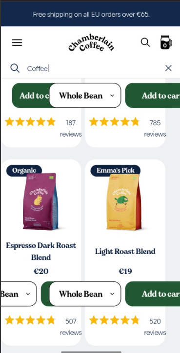
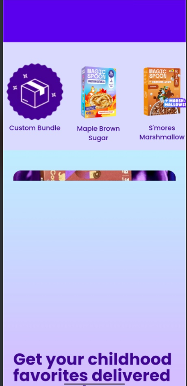
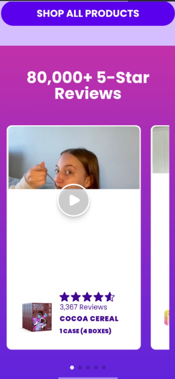

A Beginner's Guide to Website A/B Testing: Mobile UX Teardown of Chamberlain Coffee & Magic Spoon
Welcome to the second edition of my digital marketing learning journal! Today, we are exploring Website A/B Testing and Mobile User Experience (UX) Optimization. By examining real-world direct-to-consumer (DTC) brands like Chamberlain Coffee and Magic Spoon, we can learn how subtle mobile layout details, page loading stability, and checkout transparency directly influence customer happiness and conversion rates.

What is Website A/B Testing? A Friendly Introduction
For anyone just getting started in digital marketing, A/B testing (sometimes called split testing) sounds like a complex statistical topic. But at its core, it is wonderfully simple: it is a method of comparing two versions of a webpage to see which one performs better.
Imagine showing Version A (the Control, or original design) to 50% of your website visitors, and Version B (the Variation, with one specific change like a clearer button or a simplified form) to the other 50%. By measuring which group completes more purchases or stays longer on the page, marketers can make data-driven improvements instead of relying on guesswork.
Chamberlain Coffee: Mobile Search & UX Observations
Chamberlain Coffee, founded by creator Emma Chamberlain, boasts a cozy brand identity and a sleek desktop site. When reviewing their mobile site, the overall experience is solid: their desktop version is great, checkout is smooth, and an earlier newsletter email sign-up issue on mobile has already been fixed by their web team!
In fact, there is only one main problem on their website that needs to be fixed: when you search for a product on mobile, the design and layout of the results page overlaps.

Search Layout Overlap (The Primary Bug to Fix)
When searching for coffee products on a mobile browser, the dropdown menu and action buttons overlap with the product cards underneath:
- The Single Layout Bug: The "Whole Bean" selector dropdown menu floats directly over product titles, pricing (€20), and review stars.
- Button Clipping: The "Add to cart" buttons get clipped at the edges of mobile viewports.
- Email Sign-up Status: The newsletter email input field is working smoothly (issue previously fixed).
- Desktop vs. Mobile: The desktop site functions cleanly, showing this is strictly a mobile search results overlay issue.
On the positive side, Chamberlain Coffee excels in several key areas:
- Upfront Fee Transparency: They explicitly communicate upfront on the homepage header banner that shipping outside of Europe incurs additional costs (e.g., "Free shipping on all EU orders over €65"). Customers appreciate knowing this before building a cart.
- Frictionless Checkout: Once an item is added, the checkout flow is quick, clear, and completely friction-free.
- Clean SEO Indexing: Searching the brand name directly pulls up the main homepage cleanly without confusion.
Magic Spoon Cereal: Mobile Performance & Layout Flow
Magic Spoon revolutionized the cereal category with high-protein, zero-sugar versions of nostalgic childhood flavors. Their visual branding is bright and playful, but analyzing their mobile website reveals key opportunities for mobile performance and story flow optimization.

Mobile Buffering & Broken Visual Containers
Mobile shoppers experience rendering lag and cropped UI assets:
- Loading & Buffering Delays: Heavy graphic assets cause the mobile site to buffer repeatedly, slowing down page transitions.
- Image Cropping Bugs: As seen above, graphics (like cereal box banners) clip unexpectedly across section breaks, breaking visual harmony.
- Mobile Accessibility Impact: Slow loading speeds hit mobile network users hardest, potentially increasing bounce rates.

Review-First vs. Problem-Solution Flow
The current mobile layout highlights "80,000+ 5-Star Reviews" right at the top of the homepage before explaining the product clearly:
- Early Social Proof: While reviews build trust, showing customer videos before introducing the core product problem can disorient new first-time visitors.
- Missed Story Arc: E-commerce visitors usually need to understand what the product is and why they need it before reviews become persuasive.
The Ideal E-Commerce Homepage Flow
To maximize visitor comprehension and conversion, e-commerce landing pages generally thrive on a structured Problem → Solution → Benefit → Proof flow:
Core Problem & Value
Highlight the problem (high sugar in traditional cereals) and introduce the healthy alternative upfront.
Solution & Options
Present flavor varieties (Fruity, Cocoa, Peanut Butter) and bundle choices clearly.
Subscriptions & Savings
Show purchasing options, auto-delivery savings, and add-to-cart call-to-actions.
Proof & Reviews
Reinforce buying decision with 80k+ 5-star reviews and customer video testimonials.
Checkout Transparency: Managing Optional Protection Fees
Just like Chamberlain Coffee's checkout, there is no friction found in the Magic Spoon checkout. Entering customer details, selecting shipping options, and placing an order is fast, intuitive, and technically seamless.
The only subtle detail worth observing for global shoppers is the $1.50 ($1.55) Order Protection fee option on the second checkout screen.

Smooth Checkout & Optional Order Protection
While the checkout flow itself operates without any friction, the optional $1.55 "Order Protection" toggle is pre-selected by default:
- Frictionless Core Flow: Form completion and payment processing execute cleanly with zero technical lag or layout bugs.
- Global Shopper Consideration: Magic Spoon sells worldwide, not just in Europe or North America. Customers outside these regions may be unaccustomed to default protection fees added at checkout step 2.
- Educating Customers Upfront: If shoppers aren't expecting extra fees at checkout, it can occasionally lead to surprise cart abandonment.
Designing 3 Actionable A/B Test Hypotheses
As a marketing student, turning observations into structured hypotheses is the fun part! Here are three beginner-friendly A/B tests we could run to evaluate these UX improvements:
Mobile Search Menu Layout Optimization
Hypothesis: If we redesign the mobile search page to stack product dropdown selectors vertically instead of floating over product cards (Control: Overlapping elements vs Variation: Clean vertical grid), mobile search conversion rate will increase.
Homepage Storytelling Flow vs. Review-First Layout
Hypothesis: If we reorder the mobile homepage to follow a Problem → Solution → Subscription → Reviews flow instead of placing customer video reviews at the top, first-time mobile visitor conversions will increase.
Upfront Order Protection Fee Transparency
Hypothesis: If we add a subtle note on the cart drawer explaining that optional order protection ($1.55) is toggleable before checkout, cart completion rates will improve among international shoppers.
Key Takeaways for Marketing Beginners
To wrap up this second teardown, here are four fundamental lessons every beginner marketer can take away when optimizing mobile e-commerce websites:
- Mobile-First Testing is Essential: Always inspect your site on small screens! Desktop layouts rarely translate 1:1 to mobile without custom responsive rules.
- Respect the Customer's Story Arc: Guide first-time visitors naturally from core problem to product solution before overwhelming them with social proof.
- Transparency Beats Surprise: Disclose extra costs (shipping, insurance fees) early in the journey to protect brand credibility.
- Test, Don't Guess: Every design critique is simply a hypothesis waiting for an A/B test split to prove its value empirically.